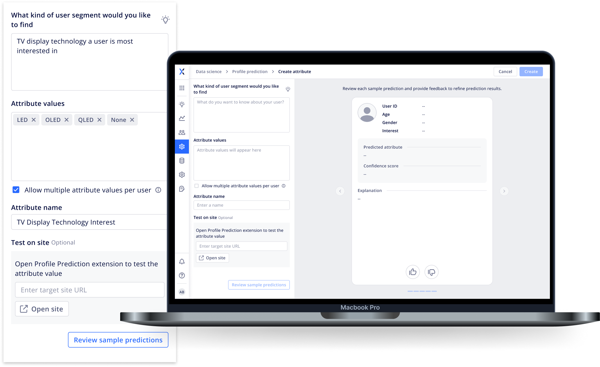
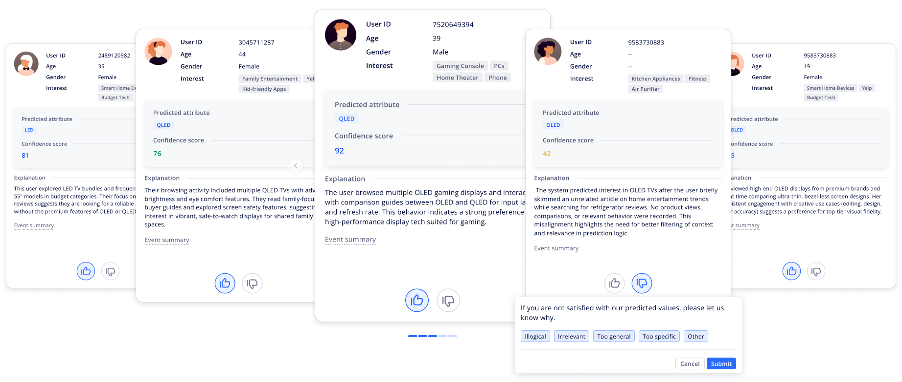
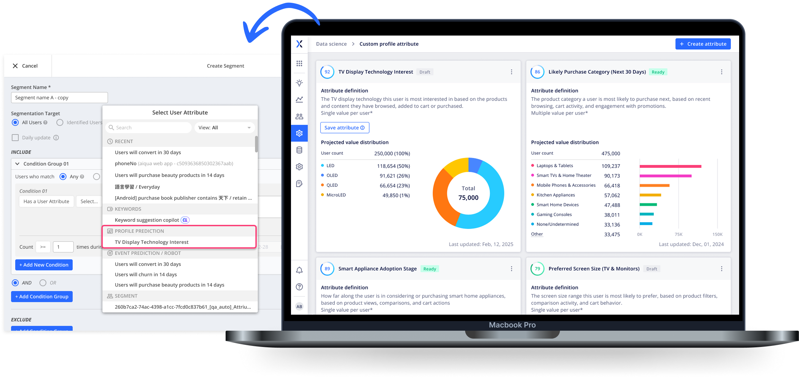
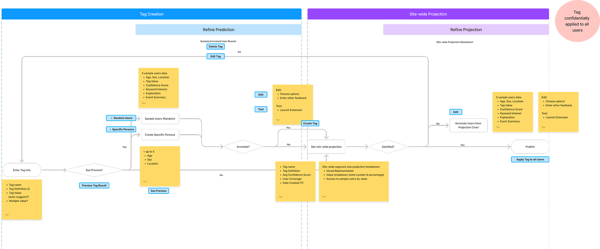
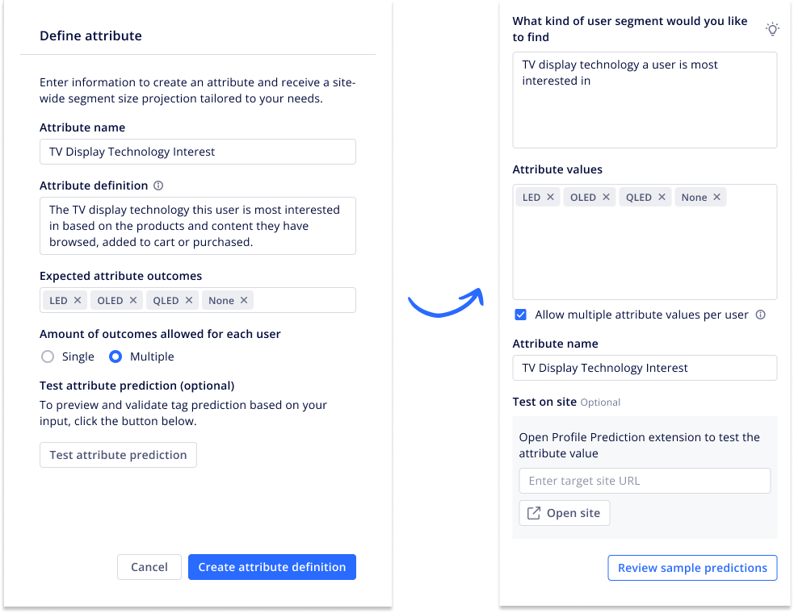
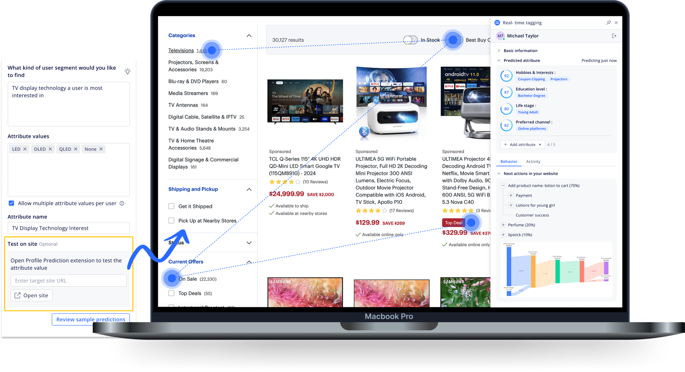
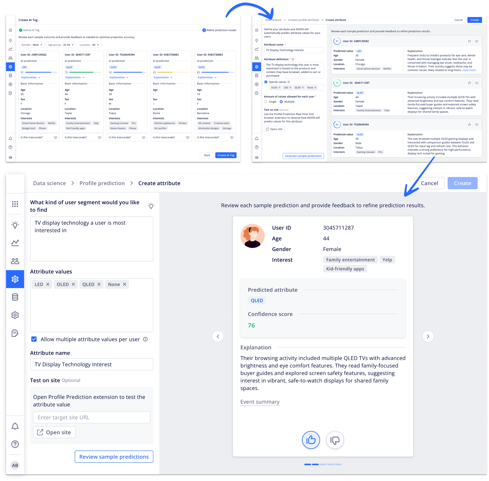

AI Customer Profile Prediction
An AI-powered MarTech tool that turns complex user data into marketing segments teams can actually act on, and trust.

The opportunity, and the catch
This was built at a large AI MarTech company serving enterprise marketing teams.
Marketers want to target people by real behavior, preference, and intent. Doing that by hand across millions of visitors isn't realistic.
AI can close that gap, but most tools traded one problem for another: marketers couldn't tell whether the output was worth trusting.
- Opaque the predictions were hard to explain
- Unverifiable no clear way to test, correct, or override them
- Risky expensive to act on at scale without confidence in the accuracy
A "look what we can do" demo, not yet a product
Before I joined, the team had built a simulation that generated live attribute predictions, demographics, hobbies, brand preferences, off a tester's own browsing.
The tech was genuinely impressive. The use case wasn't.
- The insights came from biased simulations, not real customer behavior
- There was no workflow beyond showing off what the model could do
- The output was interesting, but not something a marketer could act on with confidence
It needed to become an actual marketing tool, not a tech demo.
Build a workflow that lets marketers define an attribute, review and correct the model's predictions, see how each one was reached, and then apply it across a large audience with confidence.
The point wasn't just faster segmentation. It was earning enough trust that marketers would actually rely on AI to make a call.
A human-in-the-loop prediction workflow
Define the attribute
Marketers start by defining what they want to learn, say, which TV display technology a user is most likely to prefer.

Review sample predictions
They review a set of real user profiles with predicted values, confidence scores, and plain-language explanations. This is where they test accuracy, give feedback, and tune the model before it goes wide.

View distribution and apply
Once the logic is tuned, the system projects the attribute across the full user base. Marketers can size the segment and apply it to a campaign, like promoting OLED TVs to the people most likely to want them.

Redefine the problem before designing any screens
Redefine the problem
I pushed back on the assumption that "simulation" was the experience. Through workshops and cross-functional sessions, I helped steer the team toward generating attributes from real behavioral data instead.
Create strategic value
That reframe turned a stalled sandbox feature into a real workflow: define an attribute, tune the prediction, segment the audience.
Align and mentor the team
I got PM, engineering, AI research, and UX pointed at one product direction, and mentored the junior designers through IA, interaction patterns, and stakeholder conversations.

Designing for trust in AI
Making the workflow easy to pick up
I streamlined attribute creation, automated value generation, added CSV upload, and paired setup with live prediction examples, so the workflow taught itself as marketers moved through it.

Getting marketers to trust the predictions
I surfaced confidence scores, explanations, and live previews so marketers could see how a prediction was reached before betting a campaign on it.

Getting feedback without making it feel like work
I cut the overload by showing one card at a time, and kept the feedback actions light, so marketers could improve accuracy without it becoming a chore.

- What makes a marketer trust a prediction on first look?
- Which data points actually help them verify accuracy?
- Random previews or filtered demographic ones, which is more useful for evaluation?
- Built trust in the AI tagging workflow
- Cut time-to-segmentation from days to minutes
- Delivered a system that's flexible, scalable, and auditable
- Helped marketers apply AI insights with more confidence and control
Trust in AI takes more than accurate predictions. It needs transparency, control, and a clear way for a person to check what the model is doing.
Keeping marketers in the loop didn't just make it more accurate. It made the whole thing easier to trust, adopt, and scale.